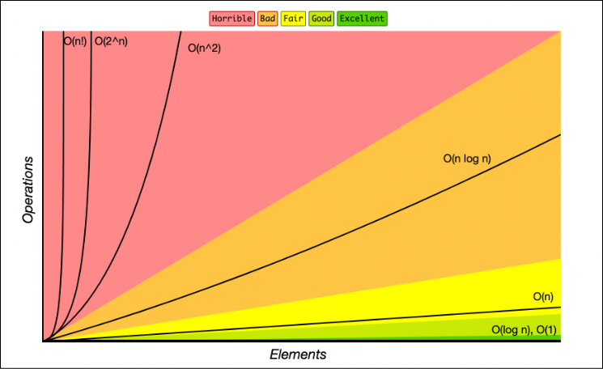

Algoritmos se comportam diferente conforme os dados crescem.
Um código funciona bem na máquina do dev
...mas na produção, papoca!
rápido
caos e gritaria
Big O mede como um algoritmo cresce conforme o tamanho da entrada aumenta.
Não em segundos exatos,
mas a tendência de crescimento.
| Tipo | Mede | Exemplo |
|---|---|---|
| Temporal | qtd de operações | Tempo para processar dados |
| Espacial | Memória utilizada | Quantidade de RAM consumida |
Pegar item da mochila
Procurar nome numa lista
Buscar capítulo no índice do livro

const nomes = ["Ana", "Carlos", "Maria"];
console.log(nomes[1]);
Não importa se existem 3 itens...
...ou 3 milhões.
A cada passo, metade dos dados é descartada.
Extremamente eficiente.
function buscaBinaria(lista, alvo) {
let inicio = 0;
let fim = lista.length - 1;
while (inicio <= fim) {
const meio = Math.floor((inicio + fim) / 2);
if (lista[meio] === alvo) {
return meio;
}
if (lista[meio] < alvo) {
inicio = meio + 1;
} else {
fim = meio - 1;
}
}
return -1;
}
~10 operações
~20 operações
Crescimento extremamente controlado.
$usuarios = ["Ana", "Carlos", "Maria"];
foreach ($usuarios as $usuario) {
echo $usuario;
}
Quanto mais dados...
...mais trabalho proporcional.
Muito comum em algoritmos eficientes de ordenação.
Cresce bem mesmo com muitos dados.
divide e conquista
caso médio
E-commerce
Produtos por preço
Marketplace
Ranking e dashboards
Ordenar rápido é requisito de produto.
for (const a of usuarios) {
for (const b of usuarios) {
console.log(a, b);
}
}
Cada item compara com todos.
Crescimento perigoso.
100 operações
10.000 operações
1.000.000 operações
O crescimento explode rapidamente.
Um dos problemas de performance mais comuns em ORMs.
Parece inocente... mas escala muito mal.
possui vários Posts
hasMany()
User
└── Posts
$users = User::all();
foreach ($users as $user) {
echo $user->posts->count();
}
Qual o BO aqui?
Primeiro:
select * from users;
Depois, para cada usuário:
select * from posts where user_id = 1;
select * from posts where user_id = 2;
select * from posts where user_id = 3;
...
1 consulta principal + N consultas relacionadas.
usuários
query inicial
queries extras
Total: 101 queries.
$users = User::with('posts')->get();
foreach ($users as $user) {
echo $user->posts->count();
}
Carregamos os relacionamentos antes.
select * from users;
select * from posts
where user_id in (1,2,3,4...);
Apenas duas consultas.
1 + N queries
escala mal
latência alta
2 queries
escala melhor
mais eficiente
O problema N+1 normalmente aparece como comportamento próximo de O(n).
E pode piorar ainda mais quando combinado com loops aninhados.
ORM não elimina complexidade.
O número de possibilidades dobra constantemente.
Crescimento brutal.
força bruta
exploração massiva
Todas as permutações possíveis.
Um dos cenários mais caros.
| n | n! |
|---|---|
| 5 | 120 |
| 10 | 3.628.800 |
| 15 | 1.307.674.368.000 |
O crescimento fica impraticável rapidamente.
Não basta ser rápido.
O algoritmo também precisa usar memória de forma inteligente.
$dados = [];
foreach ($usuarios as $usuario) {
$dados[] = processar($usuario);
}
Quanto maior o array...
...maior o consumo de RAM.
mais processamento
menos processamento
Engenharia é troca de decisões.
foreach ($usuarios as $usuario) {
foreach ($pedidos as $pedido) {
if ($pedido->usuario_id === $usuario->id) {
$usuario->pedidos[] = $pedido;
}
}
}
Dois loops percorrendo tudo.
Escala muito mal.
$indice = [];
foreach ($pedidos as $pedido) {
$indice[$pedido->usuario_id][] = $pedido;
}
foreach ($usuarios as $usuario) {
$usuario->pedidos = $indice[$usuario->id] ?? [];
}
Criamos indexação.
Mais memória, muito menos tempo.
loop dentro de loop
comparações repetidas
lentidão crescente
indexação
lookup rápido
escala melhor
Frontend também sofre com complexidade.
Algoritmos teoricamente melhores podem ter implementação mais complexa.
Legibilidade e manutenção importam.
Engenharia é equilíbrio.
Quanto mais à direita...
maior o custo de crescer.
Bons algoritmos não são apenas rápidos.
Eles são escaláveis.
E sistemas escaláveis custam menos, performam melhor e sobrevivem ao crescimento.